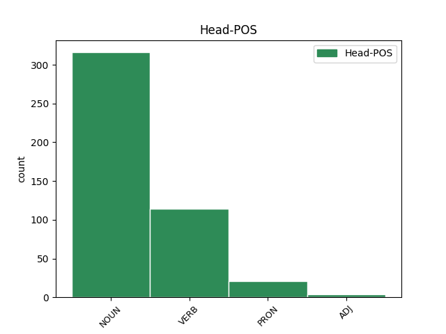

Distribution of features within this leaf


Agreement Rules sorted by frequency.
- When the dependent token is the conjunct(conj) of the head token, and the dependent token is NOUN.
1 Excisum _ _ _ _ 0 _ _ _
2 Euboicae _ _ _ _ 0 _ _ _
3 latus _ _ _ _ 0 _ _ _
4 ingens _ _ _ _ 0 _ _ _
5 rupis _ _ _ _ 0 _ _ _
6 in _ _ _ _ 0 _ _ _
7 antrum _ _ _ _ 0 _ _ _
8 , _ _ _ _ 0 _ _ _
9 quo _ _ _ _ 0 _ _ _
10 lati _ _ _ _ 0 _ _ _
11 ducunt _ _ _ _ 0 _ _ _
12 aditus aditus NOUN n-p---mn- Case=Nom|Gender=Masc|Number=Plur 0 _ _ _
13 centum _ _ _ _ 0 _ _ _
14 , _ _ _ _ 0 _ _ _
15 ostia ostium NOUN n-p---nn- Case=Nom|Gender=Neut|Number=Plur 12 conj _ LId=ostium1
16 centum _ _ _ _ 0 _ _ _
17 ; _ _ _ _ 0 _ _ _
1 at _ _ _ _ 0 _ _ _
2 ex _ _ _ _ 0 _ _ _
3 altera _ _ _ _ 0 _ _ _
4 parte _ _ _ _ 0 _ _ _
5 C _ _ _ _ 0 _ _ _
6 . _ _ _ _ 0 _ _ _
7 Antonius _ _ _ _ 0 _ _ _
8 , _ _ _ _ 0 _ _ _
9 pedibus _ _ _ _ 0 _ _ _
10 aeger _ _ _ _ 0 _ _ _
11 quod _ _ _ _ 0 _ _ _
12 proelio _ _ _ _ 0 _ _ _
13 adesse _ _ _ _ 0 _ _ _
14 nequibat _ _ _ _ 0 _ _ _
15 , _ _ _ _ 0 _ _ _
16 M _ _ _ _ 0 _ _ _
17 . _ _ _ _ 0 _ _ _
18 Petreio Petreius NOUN n-s---md- Case=Dat|Gender=Masc|Number=Sing 0 _ _ _
19 legato legatus NOUN n-s---md- Case=Dat|Gender=Masc|Number=Sing 18 comp:pred _ LId=legatus1
20 exercitum _ _ _ _ 0 _ _ _
21 permittit _ _ _ _ 0 _ _ _
22 . _ _ _ _ 0 _ _ _
1 Tu _ _ _ _ 0 _ _ _
2 quoque _ _ _ _ 0 _ _ _
3 magnam _ _ _ _ 0 _ _ _
4 partem _ _ _ _ 0 _ _ _
5 opere _ _ _ _ 0 _ _ _
6 in _ _ _ _ 0 _ _ _
7 tanto _ _ _ _ 0 _ _ _
8 , _ _ _ _ 0 _ _ _
9 sineret _ _ _ _ 0 _ _ _
10 dolor _ _ _ _ 0 _ _ _
11 , _ _ _ _ 0 _ _ _
12 Icare Icarus NOUN n-s---mv- Case=Voc|Gender=Masc|Number=Sing 14 vocative _ LId=Icarus1|SpaceAfter=No
13 , _ _ _ _ 0 _ _ _
14 haberes habeo VERB v2sisa--- Aspect=Imp|Mood=Sub|Number=Sing|Person=2|Tense=Past|VerbForm=Fin|Voice=Act 0 _ _ _
15 . _ _ _ _ 0 _ _ _
1 Colonias _ _ _ _ 0 _ _ _
2 in _ _ _ _ 0 _ _ _
3 Africa _ _ _ _ 0 _ _ _
4 , _ _ _ _ 0 _ _ _
5 Sicilia _ _ _ _ 0 _ _ _
6 , _ _ _ _ 0 _ _ _
7 Macedonia _ _ _ _ 0 _ _ _
8 , _ _ _ _ 0 _ _ _
9 utraque _ _ _ _ 0 _ _ _
10 Hispania _ _ _ _ 0 _ _ _
11 , _ _ _ _ 0 _ _ _
12 Achaia _ _ _ _ 0 _ _ _
13 , _ _ _ _ 0 _ _ _
14 Asia _ _ _ _ 0 _ _ _
15 , _ _ _ _ 0 _ _ _
16 Syria _ _ _ _ 0 _ _ _
17 , _ _ _ _ 0 _ _ _
18 Gallia _ _ _ _ 0 _ _ _
19 Narbonensi _ _ _ _ 0 _ _ _
20 , _ _ _ _ 0 _ _ _
21 Pisidia _ _ _ _ 0 _ _ _
22 militum _ _ _ _ 0 _ _ _
23 deduxi _ _ _ _ 0 _ _ _
24 Italia _ _ _ _ 0 _ _ _
25 autem _ _ _ _ 0 _ _ _
26 XXVIII _ _ _ _ 0 _ _ _
27 colonias colonia NOUN n-p---fa- Case=Acc|Gender=Fem|Number=Plur 34 comp:aux _ LId=colonia1
28 quae _ _ _ _ 0 _ _ _
29 vivo _ _ _ _ 0 _ _ _
30 me _ _ _ _ 0 _ _ _
31 celeberrimae _ _ _ _ 0 _ _ _
32 et _ _ _ _ 0 _ _ _
33 frequentissimae _ _ _ _ 0 _ _ _
34 fuerunt sum VERB v3pria--- Aspect=Perf|Mood=Ind|Number=Plur|Person=3|Tense=Past|VerbForm=Fin|Voice=Act 0 _ _ _
35 mea _ _ _ _ 0 _ _ _
36 auctoritate _ _ _ _ 0 _ _ _
37 deductas _ _ _ _ 0 _ _ _
38 habet _ _ _ _ 0 _ _ _
39 . _ _ _ _ 0 _ _ _
1 at _ _ _ _ 0 _ _ _
2 hi hic PRON p-p---mn- Case=Nom|Gender=Masc|Number=Plur 0 _ _ _
3 contra _ _ _ _ 0 _ _ _
4 , _ _ _ _ 0 _ _ _
5 ignavissumi _ _ _ _ 0 _ _ _
6 homines homo NOUN n-p---mn- Case=Nom|Gender=Masc|Number=Plur 2 appos _ LId=homo1|SpaceAfter=No
7 , _ _ _ _ 0 _ _ _
8 per _ _ _ _ 0 _ _ _
9 summum _ _ _ _ 0 _ _ _
10 scelus _ _ _ _ 0 _ _ _
11 omnia _ _ _ _ 0 _ _ _
12 ea _ _ _ _ 0 _ _ _
13 sociis _ _ _ _ 0 _ _ _
14 adimere _ _ _ _ 0 _ _ _
15 , _ _ _ _ 0 _ _ _
16 quae _ _ _ _ 0 _ _ _
17 fortissumi _ _ _ _ 0 _ _ _
18 viri _ _ _ _ 0 _ _ _
19 victores _ _ _ _ 0 _ _ _
20 reliquerant _ _ _ _ 0 _ _ _
21 : _ _ _ _ 0 _ _ _
Disagree Examples:
1 frusta frustum NOUN n-p---na- Case=Acc|Gender=Neut|Number=Plur 0 _ _ _
2 iactat _ _ _ _ 0 _ _ _
3 familia _ _ _ _ 0 _ _ _
4 Et _ _ _ _ 0 _ _ _
5 , _ _ _ _ 0 _ _ _
6 quod _ _ _ _ 0 _ _ _
7 fastidit _ _ _ _ 0 _ _ _
8 quisque _ _ _ _ 0 _ _ _
9 , _ _ _ _ 0 _ _ _
10 pulmentarium pulmentarium NOUN n-s---na- Case=Acc|Gender=Neut|Number=Sing 1 conj _ SpaceAfter=No
11 . _ _ _ _ 0 _ _ _
1 Dictaturam _ _ _ _ 0 _ _ _
2 et _ _ _ _ 0 _ _ _
3 apsenti _ _ _ _ 0 _ _ _
4 et _ _ _ _ 0 _ _ _
5 praesenti _ _ _ _ 0 _ _ _
6 mihi _ _ _ _ 0 _ _ _
7 delatam _ _ _ _ 0 _ _ _
8 et _ _ _ _ 0 _ _ _
9 a _ _ _ _ 0 _ _ _
10 populo _ _ _ _ 0 _ _ _
11 et _ _ _ _ 0 _ _ _
12 a _ _ _ _ 0 _ _ _
13 senatu _ _ _ _ 0 _ _ _
14 , _ _ _ _ 0 _ _ _
15 M. _ _ _ _ 0 _ _ _
16 Marcello Marcellus NOUN n-s---mb- Case=Abl|Gender=Masc|Number=Sing 0 _ _ _
17 et _ _ _ _ 0 _ _ _
18 L. _ _ _ _ 0 _ _ _
19 Arruntio _ _ _ _ 0 _ _ _
20 consulibus consul NOUN n-p---mb- Case=Abl|Gender=Masc|Number=Plur 16 comp:pred _ _
21 non _ _ _ _ 0 _ _ _
22 recepi _ _ _ _ 0 _ _ _
23 . _ _ _ _ 0 _ _ _
1 Aram _ _ _ _ 0 _ _ _
2 Fortunae _ _ _ _ 0 _ _ _
3 Reducis _ _ _ _ 0 _ _ _
4 ante _ _ _ _ 0 _ _ _
5 aedes _ _ _ _ 0 _ _ _
6 Honoris _ _ _ _ 0 _ _ _
7 et _ _ _ _ 0 _ _ _
8 Virtutis _ _ _ _ 0 _ _ _
9 ad _ _ _ _ 0 _ _ _
10 portam _ _ _ _ 0 _ _ _
11 Capenam _ _ _ _ 0 _ _ _
12 pro _ _ _ _ 0 _ _ _
13 reditu _ _ _ _ 0 _ _ _
14 meo _ _ _ _ 0 _ _ _
15 senatus _ _ _ _ 0 _ _ _
16 consacravit _ _ _ _ 0 _ _ _
17 , _ _ _ _ 0 _ _ _
18 in _ _ _ _ 0 _ _ _
19 qua _ _ _ _ 0 _ _ _
20 pontifices _ _ _ _ 0 _ _ _
21 et _ _ _ _ 0 _ _ _
22 virgines _ _ _ _ 0 _ _ _
23 Vestales _ _ _ _ 0 _ _ _
24 anniversarium _ _ _ _ 0 _ _ _
25 sacrificium _ _ _ _ 0 _ _ _
26 facere _ _ _ _ 0 _ _ _
27 iussit _ _ _ _ 0 _ _ _
28 eo _ _ _ _ 0 _ _ _
29 die _ _ _ _ 0 _ _ _
30 quo _ _ _ _ 0 _ _ _
31 , _ _ _ _ 0 _ _ _
32 consulibus consul NOUN n-p---mb- Case=Abl|Gender=Masc|Number=Plur 34 comp:pred _ _
33 Q. _ _ _ _ 0 _ _ _
34 Lucretio Lucretius NOUN n-s---mb- Case=Abl|Gender=Masc|Number=Sing 0 _ _ _
35 et _ _ _ _ 0 _ _ _
36 M. _ _ _ _ 0 _ _ _
37 Vinicio _ _ _ _ 0 _ _ _
38 , _ _ _ _ 0 _ _ _
39 in _ _ _ _ 0 _ _ _
40 urbem _ _ _ _ 0 _ _ _
41 ex _ _ _ _ 0 _ _ _
42 Syria _ _ _ _ 0 _ _ _
43 redieram _ _ _ _ 0 _ _ _
44 , _ _ _ _ 0 _ _ _
45 et _ _ _ _ 0 _ _ _
46 diem _ _ _ _ 0 _ _ _
47 Augustalia _ _ _ _ 0 _ _ _
48 ex _ _ _ _ 0 _ _ _
49 cognomine _ _ _ _ 0 _ _ _
50 nostro _ _ _ _ 0 _ _ _
51 appellavit _ _ _ _ 0 _ _ _
52 . _ _ _ _ 0 _ _ _
1 in _ _ _ _ 0 _ _ _
2 quo _ _ _ _ 0 _ _ _
3 cum _ _ _ _ 0 _ _ _
4 hieme _ _ _ _ 0 _ _ _
5 tota _ _ _ _ 0 _ _ _
6 copias _ _ _ _ 0 _ _ _
7 exercuisset _ _ _ _ 0 _ _ _
8 , _ _ _ _ 0 _ _ _
9 Pompeium _ _ _ _ 0 _ _ _
10 inter _ _ _ _ 0 _ _ _
11 Mylas Mylae NOUN n-p---fa- Case=Acc|Gender=Fem|Number=Plur 0 _ _ _
12 et _ _ _ _ 0 _ _ _
13 Naulochum Naulochus NOUN n-s---ma- Case=Acc|Gender=Masc|Number=Sing 11 conj _ _
14 superauit _ _ _ _ 0 _ _ _
15 , _ _ _ _ 0 _ _ _
16 sub _ _ _ _ 0 _ _ _
17 horam _ _ _ _ 0 _ _ _
18 pugnae _ _ _ _ 0 _ _ _
19 tam _ _ _ _ 0 _ _ _
20 arto _ _ _ _ 0 _ _ _
21 repente _ _ _ _ 0 _ _ _
22 somno _ _ _ _ 0 _ _ _
23 deuinctus _ _ _ _ 0 _ _ _
24 , _ _ _ _ 0 _ _ _
25 ut _ _ _ _ 0 _ _ _
26 ad _ _ _ _ 0 _ _ _
27 dandum _ _ _ _ 0 _ _ _
28 signum _ _ _ _ 0 _ _ _
29 ab _ _ _ _ 0 _ _ _
30 amicis _ _ _ _ 0 _ _ _
31 excitaretur _ _ _ _ 0 _ _ _
32 . _ _ _ _ 0 _ _ _
1 nonnulla _ _ _ _ 0 _ _ _
2 etiam _ _ _ _ 0 _ _ _
3 ex _ _ _ _ 0 _ _ _
4 antiquis _ _ _ _ 0 _ _ _
5 caerimonis _ _ _ _ 0 _ _ _
6 paulatim _ _ _ _ 0 _ _ _
7 abolita _ _ _ _ 0 _ _ _
8 restituit _ _ _ _ 0 _ _ _
9 , _ _ _ _ 0 _ _ _
10 ut _ _ _ _ 0 _ _ _
11 Salutis _ _ _ _ 0 _ _ _
12 augurium augurium NOUN n-s---na- Case=Acc|Gender=Neut|Number=Sing 0 _ _ _
13 , _ _ _ _ 0 _ _ _
14 Diale _ _ _ _ 0 _ _ _
15 flaminium _ _ _ _ 0 _ _ _
16 , _ _ _ _ 0 _ _ _
17 sacrum _ _ _ _ 0 _ _ _
18 Lupercale _ _ _ _ 0 _ _ _
19 , _ _ _ _ 0 _ _ _
20 ludos ludus NOUN n-p---ma- Case=Acc|Gender=Masc|Number=Plur 12 conj _ _
21 Saeculares _ _ _ _ 0 _ _ _
22 et _ _ _ _ 0 _ _ _
23 Compitalicios _ _ _ _ 0 _ _ _
24 . _ _ _ _ 0 _ _ _